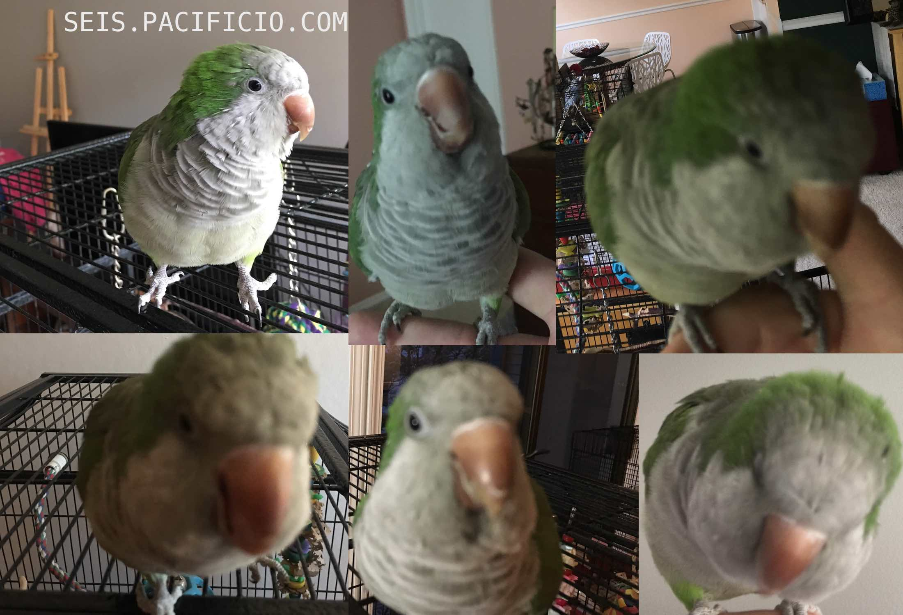

<html lang="en">

<head>
  <meta charset="utf-8" />
  <title>SEIS: a JSON object creator, viewer, updater and destroyer</title>
  <meta name="viewport" content="width=device-width, initial-scale=1">
</head>

<body>
  <script type="module">
    import { html } from 'https://unpkg.com/lighterhtml?module';
    import { component } from 'https://unpkg.com/haunted/haunted.js';

    function Blue() {
      return html`
      <div id="aboutSeisContainer">
        <section id="propsInfo">
          <h3>6️⃣</h3>
          <h3>seis <a href="https://github.com/pacificpelican/seis" id="github">💾</a></h3>
          <h4>
            an object cycle manager by 
            <a href="https://danmckeown.info">Dan McKeown</a>
          </h4>
          <aside id="json">
            SEIS is a <i>JSON object creator, viewer, updater and destroyer</i><br />
            It includes an API powered by <a href="https://expressjs.com/">ExpressJS</a> that persists the data to a JSON file (via <a href="http://techfort.github.io/LokiJS/">LokiJS</a>) and a web UI which uses <a href="https://nextjs.org/">NextJS</a> for interacting with the API.
          </aside>
          <aside>
            See the <a href="https://github.com/pacificpelican/seis/blob/master/README.md">readme</a> for how to start the app on your computer.
          </aside>
          <br /><br />
          <li>
            You can view objects by entering them into the input at 
            <a href="https://github.com/pacificpelican/seis/blob/master/pages/Objectbrowser.js">Objectbrowser</a>
          </li>
          <li>
            After visualizing the object with the <code>enter your JSON</code> button you
            can persist the data by pressing the <code>save to DB</code> button
          </li>
          <li>
            Database is saved by default to the 
            <a href="#">/db/seisdb.json</a> file in the file system
          </li>
          <li>
            These saved objects can be viewed at <a href="https://github.com/pacificpelican/seis/blob/master/pages/Desk.js">Desk</a> 
            (search for seis as the database object name) in chronological
            order
          </li>
          <li>
            Edit, View and Delete are given the URL parameters they require to work via
            clicks on the links in Desk output
          </li>
          <li>Clicking on the red X will take you to the Delete page where you can confirm deletion (of that entire object)</li>
          <li>
            When an object is created, along with the normal metadata, a
            special locator property is added. This is used as a kind of ID
            for editing and deleting
          </li>
        </section>

        <article id="appTree">
          <h3>App Component Tree</h3>
          <ul>
            <li>
              <a href="https://github.com/pacificpelican/seis/blob/master/pages/Objectbrowser.js">Objectbrowser</a> → <a href="https://github.com/pacificpelican/seis/blob/master/pages/SpreadsheetObjectbrowser.js">SpreadsheetObjectbrowser</a> → <a href="https://github.com/pacificpelican/seis/blob/master/pages/SpreadsheetCoreRecursive.js">SpreadsheetCoreRecursive</a>
            </li>
            <li>
              <a href="https://github.com/pacificpelican/seis/blob/master/pages/Desk.js">Desk</a> → <a href="https://github.com/pacificpelican/seis/blob/master/pages/Spreadsheet.js">Spreadsheet</a> → <a href="https://github.com/pacificpelican/seis/blob/master/pages/SpreadsheetCoreRecursiveClick.js">SpreadsheetCoreRecursiveClick</a>
            </li>
            <li>
              <a href="https://github.com/pacificpelican/seis/blob/master/pages/View.js">View</a> → <a href="https://github.com/pacificpelican/seis/blob/master/pages/SpreadsheetCoreRecursive.js">SpreadsheetCoreRecursive</a>
            </li>
          </ul>
          <h3 id="api">API</h3>
          <ul id="routes">
            <li>
              GET database object collection: 
              <code>/api/1/getdbdata/db/seisdb/object/seis</code>
              <span className="info">
                <a href="https://github.com/pacificpelican/seis/blob/master/pages/Desk.js">Desk</a>, <a href="https://github.com/pacificpelican/seis/blob/master/pages/Spiralviewer.js">Spiralviewer</a>
              </span>
            </li>
            <li>
              GET one database object by locator:
              <code>/api/1/getdbdata/db/seisdb/object/seis/tuple/14206</code>
              <span className="info">
                <a href="https://github.com/pacificpelican/seis/blob/master/pages/View.js">View</a>
              </span>
            </li>
            <li>
              POST create new database object: 
              <code>
                /api/1/saveobjectdata/db/seisdb/obj/seis/newdata/%22%20%7B%20%5C%22name%5C%22%3A%20%5C%22Bogey%5C%22%20%7D%22
              </code>
              <span className="info">
                <a href="https://github.com/pacificpelican/seis/blob/master/pages/Objectbrowser.js">Objectbrowser</a>
              </span>
            </li>
            <li>
              POST (shallow) create new database object: 
              <code>/api/1/saveobjectdatashallow/db/spiraldb/obj/notes/newdata/%7B%22note%22%3A%22I%20love%20the%20cat!%22%2C%22savedAt%22%3A1554680275455%7D</code>
              <span className="info">
                <a href="https://github.com/pacificpelican/seis/blob/master/pages/Spiral.js">Spiral</a>
              </span>
            </li>
            <li>
              POST update existing database object by locator property: 
              <code>
                /api/1/updatedata/db/seisdb/object/seis/objprop/Bogey/objkey/name/newval/Belle/tuple/99372
              </code>
              <span className="info">
                <a href="https://github.com/pacificpelican/seis/blob/master/pages/Edit.js">Edit</a>
              </span>
            </li>
            <li>
              POST delete existing database object by locator property: 
              <code>/api/1/deletedata/db/seisdb/object/seis/tuple/15540</code>
              <span className="info">
                <a href="https://github.com/pacificpelican/seis/blob/master/pages/Delete.js">Delete</a>
              </span>
            </li>
          </ul>
        </article>
      </div>
      <aside id="artwork">
        
      </aside>
      <footer>
        SEIS is a product of <a href="https://pacificio.com">pacificio</a> copyright 2019<br />
        <a href="https://github.com/pacificpelican/seis" id="github2">The code</a> is available under the ISC license.
        <style>
          body {
            color: black;
          }
          aside, article, section, footer {
            border-style: groove;
            border-color: aqua;
            border-width: 1pt;
          }
          img {
            width: calc(96vw);
          }
          h3, footer, div#aboutSeisContainer {
            font-family: "Hack", "Fira Sans", Menlo, monospace;
          }
          a {
            color: inherit;
          }
        </style>
        `;
    }

    customElements.define('seis-component', component(Blue));
  </script>

  <div id="wrapper">
      <seis-component></seis-component>
  </div>
  
</body>

</html>

